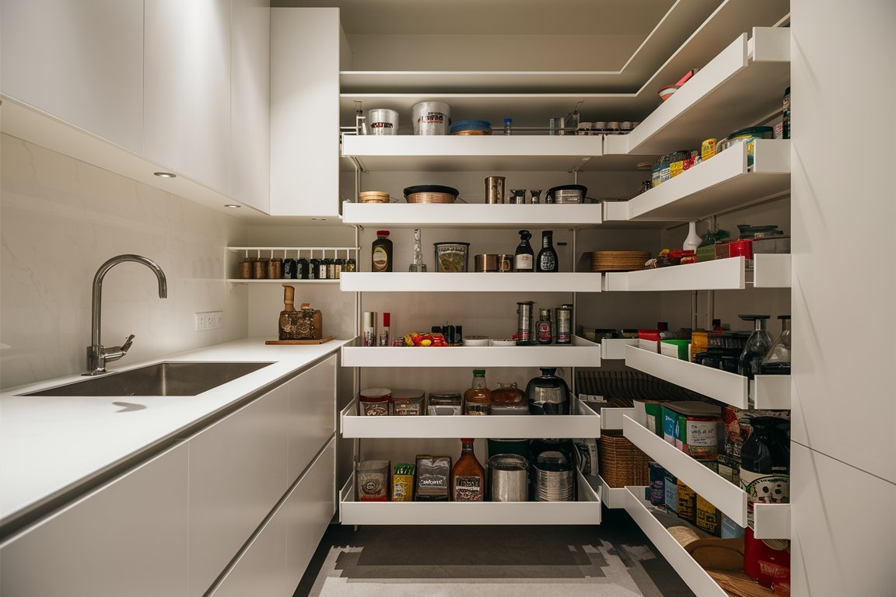
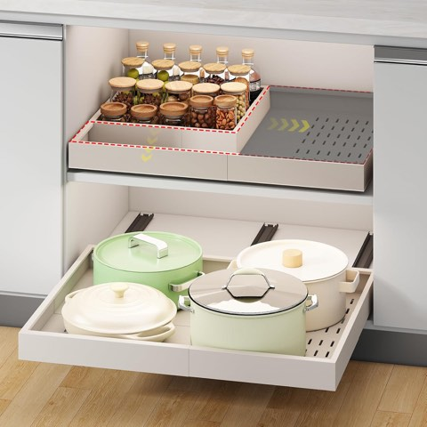
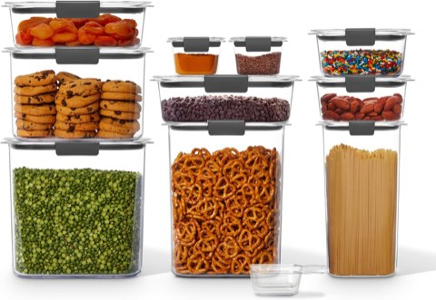
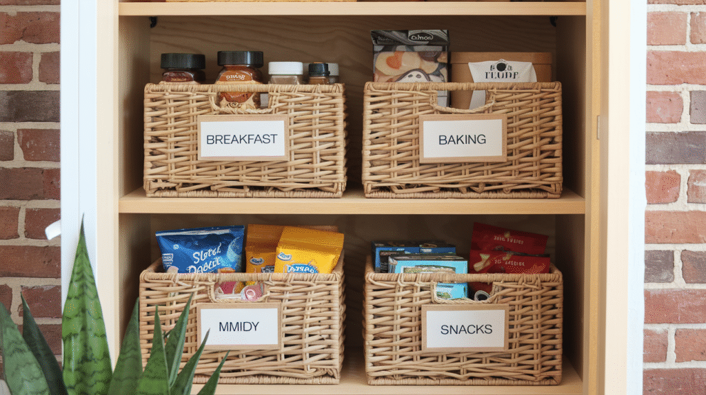
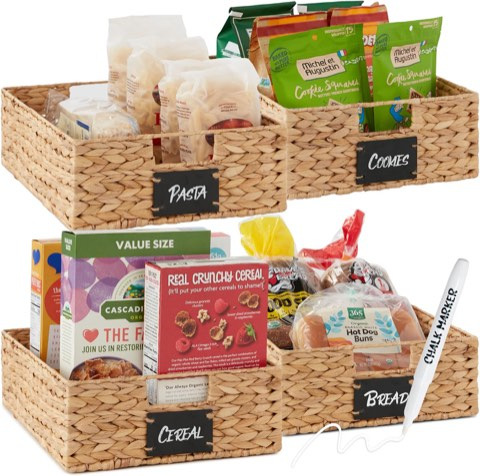
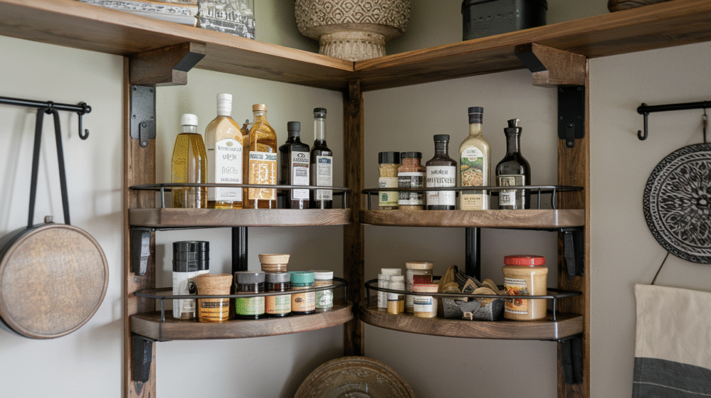
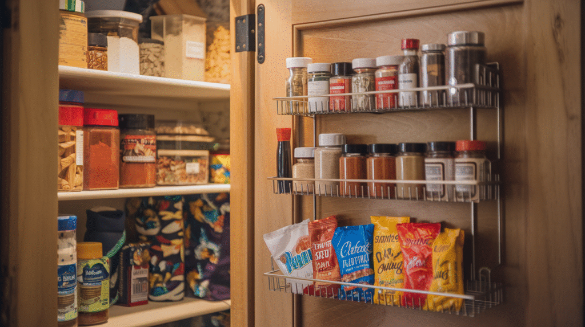
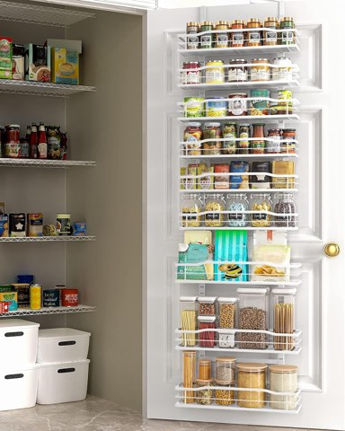
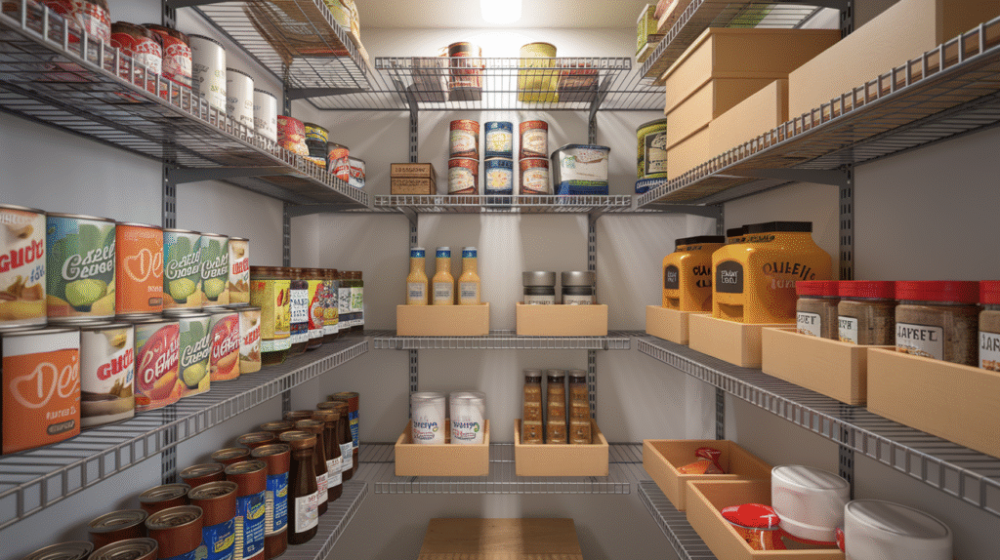
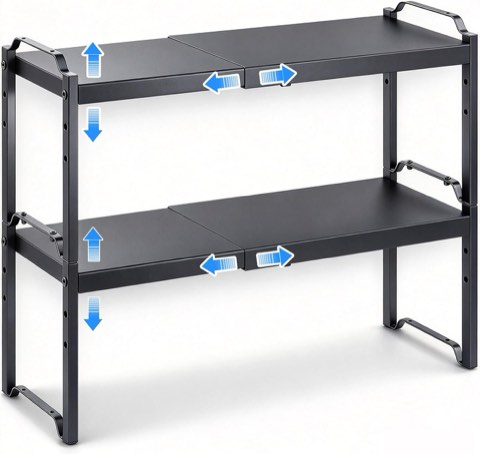

A small pantry has a way of turning into chaos fast.
Things vanish behind the spice jars.
Random items pile up.
There is always one expired can lurking in the back somewhere.
None of that takes a full renovation to fix, though.
A single cabinet or a narrow closet can still work hard with the right systems in place.


Fokyfok Expandable Pull-Out Cabinet Organizer, 14 to 21 Inch Wide, Adhesive Mount
Shop on Amazon
Rubbermaid Brilliance 10 Piece Airtight Pantry Food Storage Container Set, Clear
Shop on Amazon15 Small Pantry Organization Hacks
1. Build in Breathing Room
A pantry packed edge to edge looks organized for about a week.
Leaving a little open space on each shelf makes it realistic to maintain over time.
New groceries have somewhere to land without a full reshuffle.
A system that bends a little lasts longer than one that demands perfection.
2. Keep a Running Inventory
A simple pantry checklist saves real time at grocery-planning moments.
A mini whiteboard inside the door works well for this.
A notepad and magnet does the same job with less setup involved.
A shared digital list works too, for households splitting the shopping between people.
Fewer duplicate bottles of soy sauce end up buried in the back this way.
3. Use Tension Rods as Dividers
Baking sheets and cutting boards tend to slide flat and stack messily on a shelf.
A few tension rods placed vertically create instant upright dividers between them.
Muffin pans and cookie sheets both stay put this way.
Trays and cutting boards too, standing upright instead of stacked on top of each other.
4. Corral the Loose Packets
Gravy mixes, taco seasoning, oatmeal packets, they scatter like confetti the moment nobody's watching.
A small bin or drawer insert groups them in one spot instead.
A repurposed pouch works just as well for this.
A clear hanging file folder is another easy option worth trying.
Keeping them together means that one chili seasoning packet actually gets found again when it is needed.
5. Repurpose Magazine Holders
Magazine file holders are not just for magazines.
Standing them upright on a shelf keeps foil, parchment, and zip bags from sliding into a mess.
Food wrap boxes fit the same way, too.
No more half-squashed rolls disappearing into the back of a shelf.
6. Get a Slim Rolling Cart
A tiny or nonexistent pantry does not rule out real storage.
A slim rolling cart slides next to a fridge or into a narrow gap between cabinets.
Spices, oils, coffee supplies, and baking tools all fit well on one of these.
It rolls out of sight easily too, for anyone who wants that option available.
7. Add Hooks Under the Shelves
Shelf space is precious.
The space underneath it usually is not being used at all, though.
Adhesive or mounted cup hooks fill that gap nicely.
Measuring cups and oven mitts hang well there.
Reusable grocery bags too, along with small produce baskets.
It is a small change that frees up real shelf room without much effort.
8. Adjust the Shelves
Factory shelf spacing rarely matches what actually needs to fit in the space.
Twenty minutes of adjusting pays off fast once it is done.
Taller items stop needing to lie sideways as a result.
Clear zones open up for big items versus small ones.
It is the easiest way to add real space without any construction involved.
9. Zone It With Baskets
Grouping items into zones changes how a pantry actually functions day to day.
Think "breakfast," "baking," and "snacks" as separate areas within the same shelf.
Baskets keep each zone contained and easy to scan at a glance.
They also hide less attractive packaging, ramen included.
Woven, wire, or plastic all work.
The zoning matters more than the material chosen.


Best Choice Products 4 Pack Large Water Hyacinth Pantry Baskets, 16 x 12 Inch
Shop on Amazon10. Switch to Uniform Containers
Mismatched pasta bags, cereal boxes, and flour sacks pile up into visual chaos fast.
Uniform, clear airtight containers fix that instantly.
They stack, which frees up real space on the shelf.
They keep dry goods fresher than their original bags ever did, too.
Flour, sugar, rice, pasta, cereal, and snacks all work well in them.
11. Label Everything
Labeling every shelf and bin sounds excessive, until it is actually tried.
People actually put things back where they belong once a label tells them where that is.
It also makes it obvious when something's running low.
A label maker is the easiest way to do it.
Masking tape and a marker work just as well, too.
12. Bring In a Lazy Susan
A Lazy Susan is not just for the dinner table.
Corners are where pantry items tend to disappear.
A turntable fixes that problem directly.
Oils, vinegars, and other bottles work well on one.
Same for nut butters, spreads, and small snack containers.
A full spin means nothing gets knocked over just to reach the back of the shelf.

13. Put the Door to Work
A pantry door is wasted space more often than not.
An over-the-door rack turns it into real storage instead.
Spices, small jars, and sauces all fit well there.
Snack bars and baking odds and ends too, food coloring, cupcake liners, that kind of thing.
An adjustable rack fits taller bottles without any shelf-Jenga required.


Moforoco White 9-Tier Over-the-Door Pantry Organizer, Metal Hanging Rack
Shop on Amazon14. Go Vertical
Floor space runs out fast in a small pantry.
Height usually does not, though.
Stackable shelves or tiered organizers make use of every inch up top.
Wire risers keep canned goods visible instead of hidden in the back row.
A tension rod or two works for hanging lighter items, like chip bags or cleaning cloths.
Less-used items go on the highest shelf.
A step stool handles the rest.


Expandable Adjustable Kitchen Cabinet Shelf Organizer for Countertop Storage
Shop on Amazon15. Ditch What You Do not Use First
Decluttering is not glamorous.
It is still the single most effective pantry fix there is, by far.
Six types of vinegar?
Probably not all needed.
That jar of fig jam from who knows when?
Be honest with yourself.
Toss the expired stuff.
Donate what is untouched but still good.
Clear the space before adding a single new system to it.
Final Thoughts
A small pantry does not need a walk-in footprint to function well.
It just needs a few systems that actually match how the space gets used day to day.
Start with decluttering, add one or two storage upgrades, and build from there at your own pace.
The goal is not a Pinterest-perfect shelf.
It is a pantry that makes sense on a random Tuesday night.